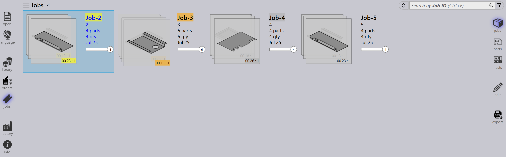
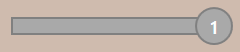

Jobbvy
Detta avsnitt förklarar de olika vyerna som finns tillgängliga i jobbvyn, inklusive Jobb, Delar, Häckar, Redigera, Simulera och Exportera.
Jobb
Genom att välja alternativet Jobb visas en lista över alla jobb som för närvarande är inställda i programvaran. Ni kan dubbelklicka på ett jobb för att visa dess detaljer eller högerklicka för att komma åt ytterligare alternativ.
-
Jobb visas i panelvy, där varje jobb visas med grundläggande egenskaper som Jobb-ID, Jobbreferens, Kundnamn, Totalt antal delar, Förfallodatum, Jobbstatusfält etc.
-
Varje jobbpanel visar också delbilder i ett stapelkortformat. Ni kan bläddra igenom alla delar i ett jobb med mushjulet.

Jobbdetaljer
-
Genom att dubbelklicka på en panel eller trycka på tangenten Enter efter att ha valt en panel växlas vyn till detaljläge.
-
Detaljsidan visar dellistan tillsammans med de häckade arken (layouter), om det finns några.
-
Använd piltangenterna uppåt/nedåt för att växla mellan jobb på detaljsidan.
-
Att rulla mushjulet över delstapeln markerar delen både i dellistan och i layouterna.
-
Att välja en layout markerar layouten och alla delar häckade på den i dellistan. Markeringarna stängs automatiskt av efter en minut.

-
Nestingsammanfattning:
-
Detaljer: Visar det totala antalet orderposter och den totala kvantiteten i jobbet.
-
Plåtar: Visar det totala antalet häckade ark tillsammans med den totala arkkvantiteten.
-
-
Arbetssteg:
-
Bockning: Visar tilldelad maskin och dess orderkvantitet som ska bearbetas.
-
Skärning: Visar tilldelad maskin och dess orderkvantitet som ska bearbetas.
-
Prioritet
-
Klicka först på ikonen Jobs till vänster på skärmen, välj det jobb ni vill redigera och klicka sedan på edit till höger på skärmen (se till att alternativet Jobs är valt).
-
Alternativt högerklickar ni på det valda jobbet och klickar på ikonen Checka ut dokumentet för redigering.
-
När ni klickar på edit visas redigeringsjobbet-fönstret. I detta fönster kan ni ställa in eller ändra prioriteten för jobbet.

-
Baserat på jobbdelsprioritet skuggas jobbreferensen i jobbpanelen i färg i enlighet därmed.
-
Jobbdelar sorteras först efter prioritet och sedan efter förfallodatum. De är också färgskuggade enligt sin prioritet.
-
Vid häckning beaktas först Urgent-delar, följda av High, sedan Normal, och slutligen placeras Low-prioriterade delar i det återstående utrymmet på häckarken.
-
Häckark sorteras också och färgskuggas enligt prioritet.
| Jobbprioritet | Färgbeskrivning |
|---|---|
|
Urgent |
|
Normal |
|
High |
|
Low |


Status
-
Jobbstatusfältet använder färgkoder för att indikera framsteg eller tillstånd för jobbet baserat på kvantiteten som bearbetats eller återstår.
-
Delarna inom jobbet och häckarken markeras också med matchande färger för att återspegla deras individuella status inom det övergripande JOBBET.
-
Färgkodning förbättrar spårningen och säkerställer att operatörer enkelt kan se produktionsstatus med ett ögonkast.


| Jobbstatus | Beskrivning |
|---|---|
 |
Inte klar |
|
Nesting |
|
Klar |
|
Bend Planned |
|
Plåt saknas |
|
Bockningskö |
|
Skärkö |
|
Klar |


Delar
Vyn Aktiva delar visar alla delar som för närvarande pågår inom aktiva jobb.
Varje del representeras som en panel som visar nyckeldetaljer såsom delnamn, dimensioner, material, tjocklek, kvantitet och förfallodatum. En visuell förhandsvisning av delen visas också.
Denna vy hjälper användare att övervaka bearbetningsstatusen för enskilda delar och spåra deras framsteg i pågående jobb.

Häckar
Vyn Aktiva häckar visar alla häckar som för närvarande pågår inom aktiva jobb.
Varje häck representeras med relevanta detaljer såsom antal delar och bearbetningsstatus. En visuell layout av de häckade delarna visas också.
Denna vy hjälper användare att övervaka häckningsframsteg och spåra hur delar arrangeras och bearbetas på ark.

Redigera
Alternativet Redigera gör att ni kan ändra det valda objektet.
Baserat på den aktuella vyn öppnas den valda instansen för redigering:
-
I jobbvyn öppnas det valda jobbet för redigering.
-
I vyn Aktiva delar öppnas den valda delen för redigering.
-
I vyn Aktiva häckar öppnas den valda häcken för redigering.

Exportera csv
Exportalternativet låter er välja jobbinformation och exportera den till en CSV-fil.
-
Klicka på ikonen jobs.
-
Klicka på alternativet export till höger på skärmen.

-
En dialogruta visas som visar tillgängliga fält:

-
Markera kryssrutorna för de fält ni vill exportera.
-
Använd alternativet Group By om ni vill gruppera data efter ett valt fält.
-
Klicka på Export för att generera CSV-filen.
Ytterligare information
Det finns också tre ytterligare ikoner till höger på skärmen som är Simulera, Goto och Tillbaka.
-
Simulera kommer att öppna det valda objektet för en mer detaljerad vy.
-
Goto kommer att växla fokus och visa på delen eller häcken som är vald.
-
Back går tillbaka en nivå från där ni för närvarande är, till exempel att klicka på Tillbaka när ni är i simulering tar er tillbaka till huvudjobbet och från ett jobb tar det er tillbaka till huvudjobbvisningen.